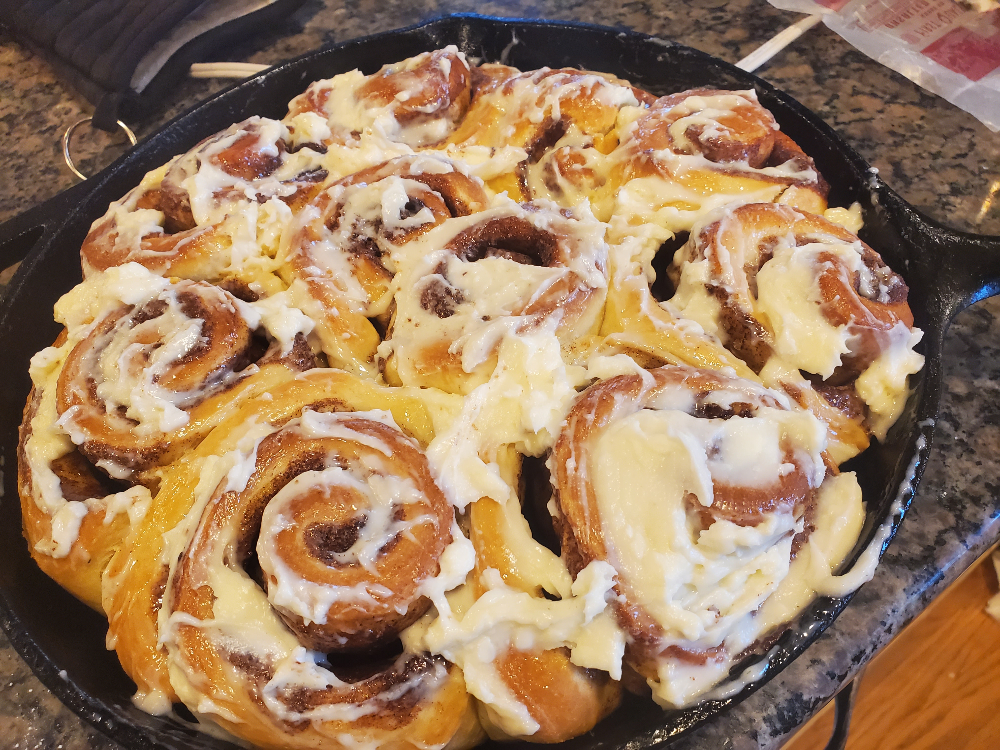
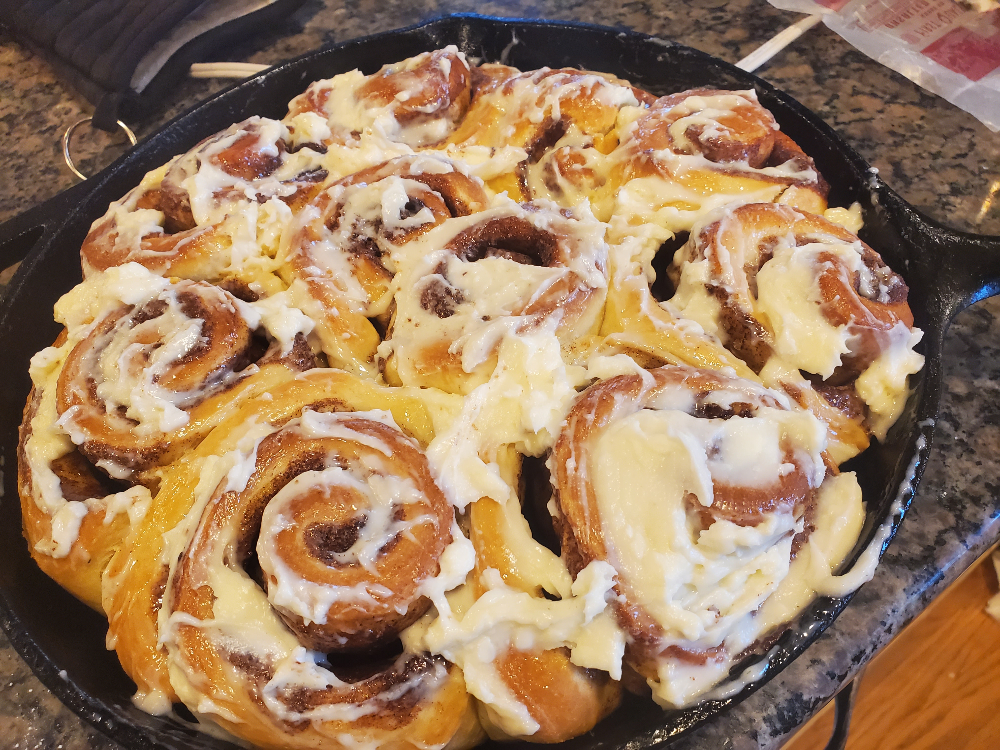

Welcome To Paul and Friend's Recipe Book
About Me:
Hey I'm Paul, and welcome to my website! This website is meant for me, my friends, and family to go on here and look up any recipes that we enjoy. Its also meant as practice for me in making websites in general. We are hopefully going to have a lot of different people's recipes in here. My background in cooking is me just being a homecook. I had to teach myself when I was much younger because circomstances just sorta worked out that way. I ended up really enjoying it and luckily my dad is an amazing cook and I got to learn a lot from him when I was younger. Now a days my sister and I are the cooks in the house and we share responsibilites when it comes to cooking for big events and what not. We both love cooking and luckily have very different tastes when it comes to cooking so we sorta balance each other out. What you'll see on here from me specifically is a lot of baking, Italian food, and anything else I've learned over the years. The theme of this website is based off of a cookbook that I made for someone special a while back. Thanks for visiting and I hope you find a good recipe in here somewhere.

This is some waffles that I made and added some blueberries to the batter.You'll find it in the My Recipes Page.
This is my famous french toast made of some homemade oatmeal bread. You'll find it in the My Recipes Page.
 

These are my homemade cinnamon rolls. I make these every year for christmas. I use a cream cheese frosting on them which you can see in the right picture. You can find them in the My Recipes Page.

This is hot chocolate from my favorite hot chocolate recipe that I always make on Christmas. You'll Find it in the My Recipes Page.
This is the key lime pie recipe that I made on my dad's birthday. You can find it on the My Recipes Page.

This is a special version of the apple pie that I made for thanksgiving last year. You can find it on the My Recipes Page.

This is a giant cookie that I made with my sister's brown butter cookie recipe.

This is my fondue recipe that I make for my mom every mothers day and her birthday.

This is my oatmeal bread recipe that I make for holidays beacuse my grandfather used to make them for all the big holidays.

This is my roasted garlic that's simple and very worth making and adding them to many of the recipes that use garlic is always a good idea.
This is my friend sun's portabella parmesan recipe. You can find this on the friend's recipes page.

This is a picture of the pizza dough and a couple pizzas when my family had a pizza night. You can find the recipe for everything in the My Recipes Page.


This is my famous French Onion soup recipe! I based it from what I learned from my dad and went and changed a couple slight things that I think taste better.